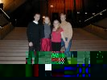

|
Today Klaus had to get up early because he had to pick up Lene & Dirk from the international airport. Dirk arrived around 6AM, coming from Boston, just in time to meet with Lene, flying in from Denmark at around 6:45AM. Half an hour later Klaus showed up and together they went "home" to the Visser's. Jetlagged the two new adventures, that are going to join the Grumman-crew for the next month, hit the sacks. This strategic move enabled them to enjoy the upcoming evening event...
Refreshed from the short slumber the four of us went downtown Sydney, to catch an opera at the world-famous Sydney Opera House. The opera of the day was "Madame Butterfly".

Linda & Klaus had ordered four $140 seats, waiting for us. Most of us are not used to operas so it took a while to get used to the Italian dialogs that were sung. Luckily, the Opera House provides surtitles to the dialogs that allow lay people like us to get an idea about what is said/sung on the stage. :-) All of us enjoyed the opera very much and agree upon the fact that the Sydney Opera House is the perfect setting for a first encounter with the art of opera.
Bushed, but happy, we went home to get a good night's sleep...


| |
|
{kind=link}